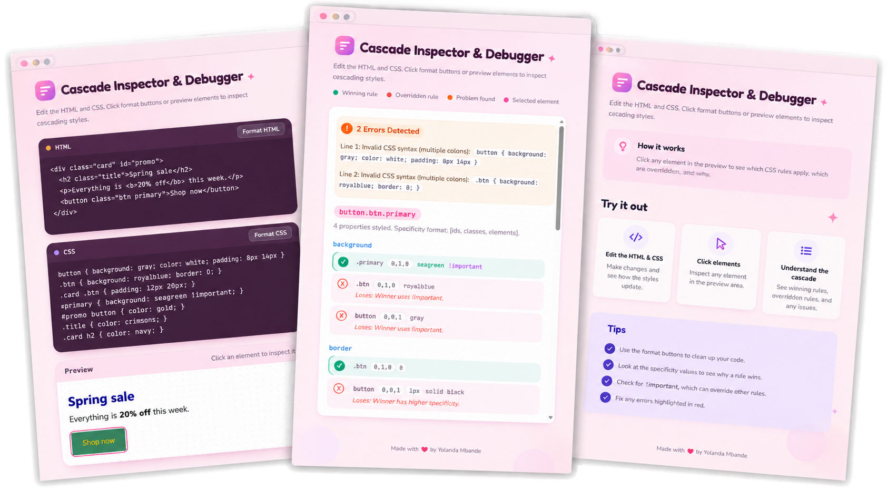

Cascade Inspector
CSS INSPECTION & DEBUGGING TOOL
CSS can be a little dramatic. You change one thing, and suddenly something else breaks. I built Cascade Inspector to make understanding CSS rules a little less frustrating and debugging a lot less confusing.👷♀️
Built with
HTML
CSS
JavaScript